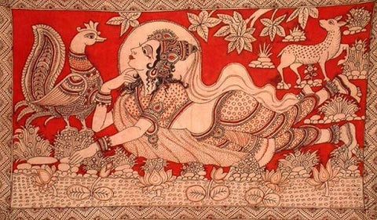
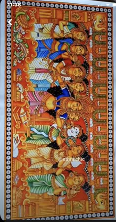

Kalamkari is an ancient textile printing art that finds its roots in the Indian state of Andhra
Pradesh. The ancient textile printing art form is believed to have evolved about 3000 years
ago in Andhra Pradesh. Kalamkari gained popularity in the south of India during the reign of
Vijayanagara Empire. Kalam implies 'pen' and Kari means 'art', a name given by the Mughals
when they discovered the art during their reign over the Deccan region. Only natural dyes
are used in Kalamkari, which involves twenty-three steps.There are two main styles
of Kalamkari. The block printed that is practised in the town of Machilipatnam and the hand
painted style that is largely practised in the town of Srikalahasti, both located in
Andhra Pradesh.
Srikalahasti style of Kalamkari, where the "kalam" or pen is used for
freehand drawing of the subject and filling in the colours, is entirely hand worked.
It is produced in Srikalahasti of Tirupati district of Andhra Pradesh. This style
flourished in temples centred on creating unique religious identities, appearing on
scrolls, temple hangings, chariot banners as well as depictions of deities and scenes
taken from the Hindu epics (e.g. Ramayana, Mahabharata and Purana). The style owes its
present status to Kamaladevi Chattopadhyay who popularised the art as the first
chairperson of the All India Handicrafts Board.
Styles
The Kalahasti style is produced in Srikalahasti of Tirupati district. A "kalam" or pen
is used for freehand drawing of the subject and filling in the colours and is entirely
hand worked. This style flourished in temples centred on creating unique religious
identities, appearing on scrolls, temple hangings, chariot banners as well as
depictions of deities and scenes taken from the Hindu epics. As a result it has a
distinct religious identity and thrives on mythological themes. The attractive
blend of colours on the fabrics usually portrays characters from the Indian
mythology, with the divinity figures of Brahma, Saraswati, Ganesh, Durga, Shiva
and Parvati as the main source of inspiration. The Kalahasti artists generally
depict on the cloth the deities, scenes from the epic Ramayana, the Mahabharata,
Puranas and other mythological classics mainly producing scrolls, temple backcloths,
wall hangings, chariot banners and the like.
In ancient times, the common man learned of gods and goddesses, and of their mythical character
from these paintings. Groups of singers, musicians and painters, called chitrakattis, moved from
village to village narrating the great stories of the Hindu mythology. Progressively, during the
course of history, they illustrated their accounts using large bolts of canvas painted on the spot
with rudimentary means and dyes extracted from plants. Thus, it is believed, was born the first
Kalamkari.It was registered as one of the geographical indication from Andhra Pradesh, under
handicraft goods by Geographical Indications of Goods (Registration and Protection) Act, 1999.
Middle forms
In the Middle Ages, the term was also used to refer to the making of any cotton fabric patterned through
the medium of vegetable dyes by free-hand and block-printing, produced in many regions of India.
In places where the fabric is block printed, the kalam (pen) is used to draw finer details and for
application of some colours.
Technique
The first step in creating Kalamkari is steeping it in astringents and buffalo milk and then drying
it under the sun.Afterwards, the red, black, brown, and violet portions of the designs are
outlined with a mordant and cloth are then placed in a bath of alizarin.The next step is to cover
the cloth, except for the parts to be dyed blue, in wax, and immerse the cloth in indigo dye.
The wax is then scraped off and the remaining areas are painted by hand,similar to Indonesian
batik.
To create design contours, artists use a bamboo or date palm stick pointed at one end with
a bundle of fine hair attached to this pointed end to serve as the brush or pen.This pen is
soaked in a mixture of jaggery and water; one by one these are applied, then the vegetable dyes are
added.
In Iran, the fabric is printed using patterned wooden stamps.

Colour fixing
Dyes for the cloth are obtained by extracting colours from various roots, leaves, and mineral salts of
iron, tin, copper, and alum.Various effects are obtained by using cow dung, seeds, plants and
crushed flowers to obtain natural dye. Along with buffalo milk, myrobalan is used in kalamkari.
Myrobalan is also used to remove the odd smell of buffalo milk. The fixing agents available in the
myrobalan can easily fix the dye or colour of the textile while treating the fabric. Alum is used in
making natural dyes and also while treating the fabric. Alum ensures the stability of the colour in
Kalamkari fabric.
Themes
Kalamkari specifically depicts epics such as the Ramayana or Mahabharata.
However, there are recent applications of the Kalamkari technique to depict Buddha and
Buddhist art forms.In recent times, many aesthetically good figures such as musical
instruments, small animals, flowers, Buddha and few Hindu symbols, like swastika are also
introduced to Kalamkari.
Modern day
Contemporary kalamkari techniques show various departures from the
past. In Masulipatnam, mordant is now uniformly printed with a block. Indigo dyeing has
been given up and the application of the wax resist by kalam has also disappeared.
The mordant for outlining in black remains unchanged, but iron acetate has replaced
indigo for dyeing the larger areas black, despite its known corrosive qualities. Yellow
dyes are made from dried flowers called aldekai (Telugu) or kadukai (Tamil) of the
myrobalam, Terminalia chebula.
Nowadays, in India, silk, mulmul, cotton, and synthetic
saris are also sold with Kalamkari print. Printing is a much easier task than traditional
Kalamkari work. Kalamkari dupattas and blouse pieces are popular among Indian women.